A paid order becomes a pick. You scan that pick on the handheld. Validating the pick creates the delivery. The label, the box, and the final Validate are done on the computer.
Picking is the mobile barcode app. Everything after that is the desktop delivery order (WH/OUT).
Pick up in store is the same pick. When the customer has the order, Validate the delivery and stop. There is no label.
Confirming a sales order does not print a label. It creates a pick named WH/PICK/…. That pick moves the units from stock onto the packing table (WH/Stock → WH/Output). The customer shipment, WH/OUT/…, is created when that pick is validated.
If the customer asked to ship what is in stock now and the rest when Victron stock arrives, there are two picks. Read the note on the pick:
Pick the in-stock one now. Leave the Victron pick until that purchase order is received.
Open the Barcode app on the handheld. You do not start this from the sales order. The red box in each picture is the control that step is talking about.
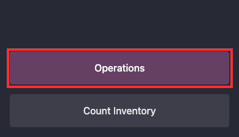
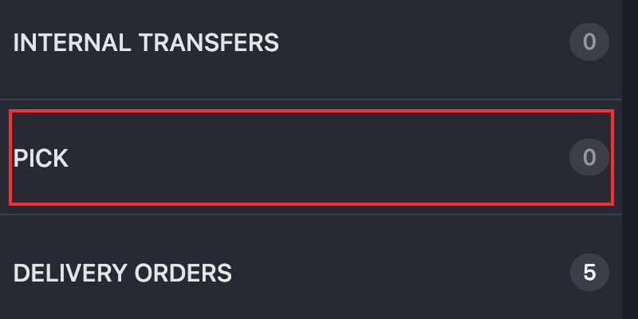
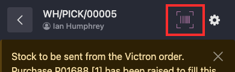
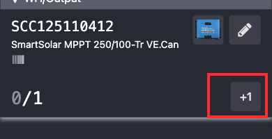
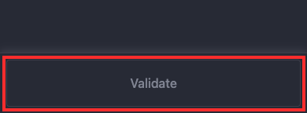
Do not tap Add Product. If the scanner says the product is not reserved for this order, cancel that warning and leave the unit in stock.
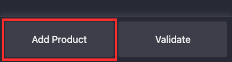
Do not validate a WH/OUT from the scanner. Scanning is only for the pick.
After the pick is validated, Odoo creates the delivery. You are still on that pick. Next Transfer opens the delivery.
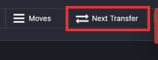
The other way is the deliveries list:
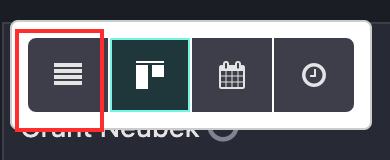
WH/OUT for the same sales order. A shipment that has been picked shows From WH/Output and status Ready. Older one-step deliveries show From WH/Stock. The Source Document is the sales order number.
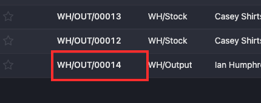
If Carrier on the delivery says Pick up in store, the customer collects the order at the shop. There is no label and no box to ship. The delivery address reads In-Store Pickup.
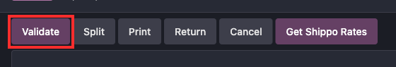
If Get Shippo Rates is clicked on a pickup, Odoo asks: “This order has been marked as in-store pickup. Are you sure you want to print a shipping label?” Click Cancel.
The product lines should already show the serials you scanned. Split, when you need it, comes before the label. Validate is last.
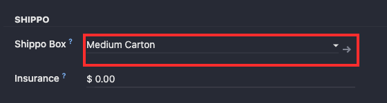
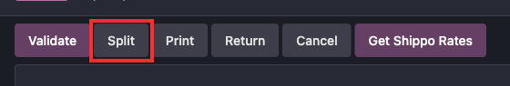
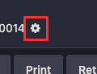
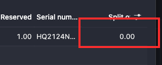
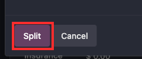
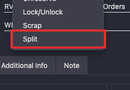
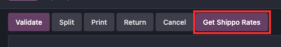
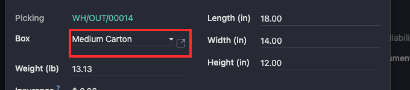
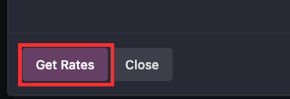
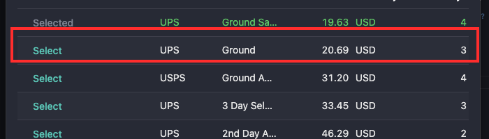
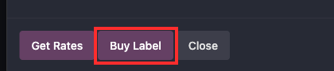
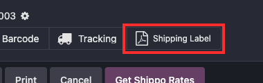
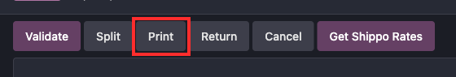
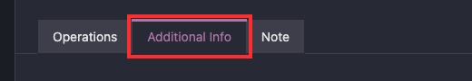
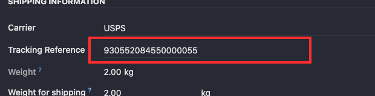
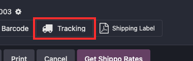
The Barcode button on the delivery opens the scanner for that shipment. Do not scan or validate the delivery from there.
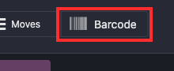
Pick up in store stops earlier. Scan and Validate the pick. When the customer has the order, Validate the delivery. The list below is for a shipment that leaves the building.
WH/OUT from Deliveries.Validating the delivery before the label is on the box marks it shipped with nothing to stick on the carton. In-store pickup has no label. Validate that delivery only after the customer has the order. If a scan, a split, or a label goes wrong, use the fixes below. Do not correct any of these with an inventory adjustment. An adjustment changes the quantity without a receipt or a delivery, and that throws off cost.
Victron labels sit on top of each other: the product code and the serial. The scanner takes whichever one the beam hits, and it will accept a part number as if it were a serial.
Cover the code you are not scanning. If the line already shows the wrong value, tap the minus on that line. The bad scan comes off. Scan the serial on the unit in your hand.
The scanner says the product is not reserved for this order. It is in the system, and it is not this customer’s.
Press Cancel. Leave the unit in stock. Adding it puts a product on the order that the customer did not buy.
A serial can belong to one unit. Scanning it again is rejected. That number is already on another record, often because the receipt stored the wrong code.
Do not ship the box under a serial that is not printed on it. Look the product up in Inventory → Physical Inventory and read the serial Odoo has in stock. Pick that unit, or stop and correct the receipt before this pick is validated. Do not type a new serial onto the pick to force a match.
A pick does not need a location barcode, and it does not need a signature.
Back out of the pick. Don’t scan a random barcode, and don’t sign a name, to get past the prompt. Leave the pick unvalidated and have that prompt turned off. Then open the pick again.
Operations shows Pick 0, the pick says it is already done, or the screen is only the note and a grey Validate, with no product lines. A Victron remainder looks like that until its purchase order is received. The banner names the purchase order.
Leave it. Receive that purchase order first. Don’t validate an empty pick, and don’t scan units onto a pick that is already done.
The lines were not all the right units, but Validate was purple and it got tapped. The units are now on the packing table and a WH/OUT exists. Nothing has shipped, and no customer email has gone out.
Do not buy a label, and do not Validate the delivery. Click Cancel on that delivery first, so the serials are no longer reserved on it. The units are still on the packing table. Open the finished pick and click Return. Validate the return. That moves them from the packing table back to stock.
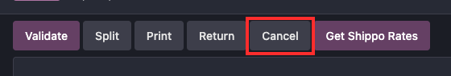
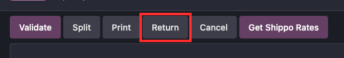
Don’t start another pick until the sales order has an open delivery again. If cancelling the delivery left the order with no shipment, leave the units in stock and flag the sales order. Don’t put them back with an inventory adjustment.
Pick up in store is not this case. That delivery has no label. Validate it when the customer has the order.
Validate on the computer means it has shipped. The customer email goes out. The label file is still on the delivery.
If the label was already bought, open it with the Shipping Label button, print it, and put it on the box before the carrier scans the package. If no label was bought, click Return on that delivery. Returning a delivery creates a receipt back into stock. Validate the receipt. The shipment is undone and the units are back. Then pick and ship again. The customer may already have the shipped email. Don’t adjust the quantity by hand to “put it back.”
Get Rates does not charge. Buy Label does. The charge is for the label, not for the carrier pickup. A label the carrier never scans can be voided.
On the delivery, open the gear and click Refund Shippo Label. The tracking number comes off the delivery, and the chatter says not to use that label. Tear it up. Shippo confirms the refund afterward. It is not instant. The gear item will refuse a second refund while one is already queued, pending, or successful.
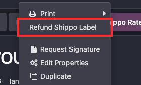
If the carrier has already scanned the package, the refund is refused. The shipment stands. Don’t buy another label for the same box.
A missing or invalid phone number makes Shippo refuse the purchase. Put a phone on the warehouse contact and on the delivery contact, click Get Rates again, and buy once.
The label opens in a new browser tab, 4×6. If that tab didn’t appear, or the Zebra is down, click Shipping Label on the delivery. That opens the same file. Print to PDF and use another 4×6 printer if you have to.
Don’t click Buy Label again to “get the tab back.” A second click purchases another label and replaces the tracking number on the delivery. The first label is still a real charge. The gear refund voids only the label currently stored on the delivery. The earlier tracking number is in the chatter, on the “Shippo label purchased” note. Don’t put that label on a box. Give that tracking number to whoever runs the Shippo account so it can be voided there.
The Split command in the gear menu is the standard Odoo split. It keeps the quantity and drops the serials that were already picked. The header Split button is the one that keeps them.
If the gear split already ran, open both deliveries before you buy a label or validate. The serials that survived are on one of them. The other has quantities and blank serials. Scan those serials onto that delivery, the same way you pick, and confirm each line shows the serial printed on the unit. Then buy the label.
The header Split only runs on a delivery that is still open. It tells you which of these it is:
If the split amounts are wrong and neither delivery has a label and neither is validated, don’t ship them that way. Split again so each delivery matches the units actually in that box. Splitting never merges two deliveries back into one, and cancelling the new delivery does not put those units back on the first. Leave both open until each one shows the serials that are physically in its box.
Two boxes are two deliveries, so two emails is the normal result. Each email should be the tracking number on that box.
An email with a blank tracking number means Validate happened with no label on the delivery, or the label was refunded and the tracking field was cleared. Don’t send the template again until Additional Info shows the tracking number that is on the carton. The tracking button on the delivery should open the carrier’s page in one click. That is the same link the customer gets. Shippo should not send its own email.
The returns walkthrough is not in this SOP yet. The rule, so it is not done as an inventory adjustment: on a receipt or a delivery, click Return. Returning a receipt creates an outgoing transfer back to the vendor. Returning a delivery creates a receipt back into stock. Open that new transfer and Validate it. Until it is validated, the quantity has not moved. A manual quantity change is what throws off cost, because it is not tied to a receipt or a delivery.